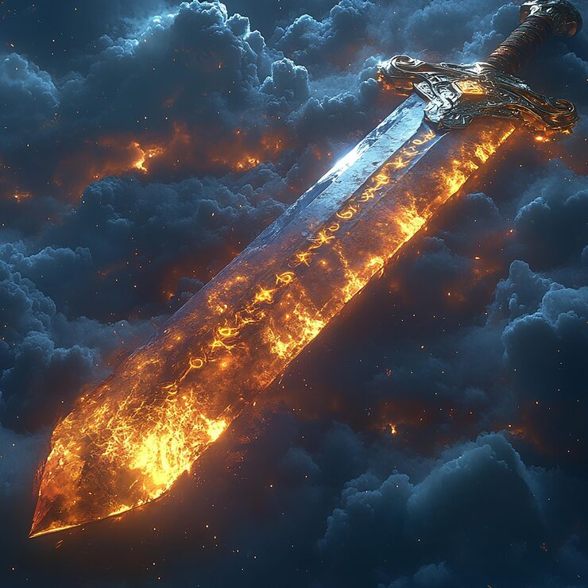

Um dia no Olimpos ocorreu uma guerra com essa guerra acontece que cai uma espada
Você acha um campo de batalha .
Você encontra duas criaturas uma hidra e um ogro
Você encontra um bandido.

Você decide que a aventura é muit difícil e desiste.
Você encontra um gigante guerreiro.
Andando você encontra uma caverna.
Dentro da caverna a dois caminhos.
Você se depara com uma caverna
O Dentro da caverna existem dois caminhos .
Lado direito te leva a um mostro .

No caminho esquerdo leva um tesouro /p>
Você encontra a singulariadde o maior tesouro.